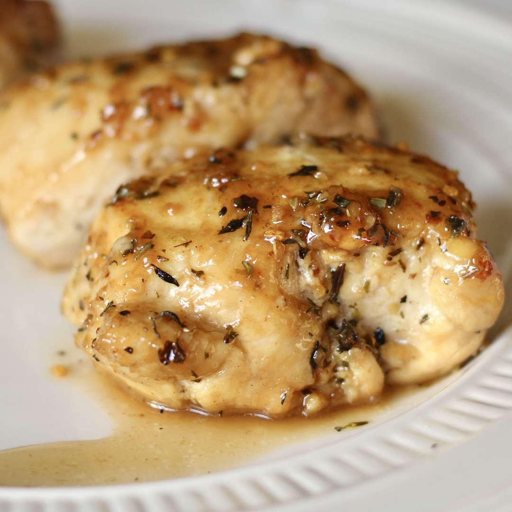

Garlic-Brown Sugar Chicken Thighs

Description
Brown sugar chicken baked in a sweet honey-garlic sauce develops a deliciously browned and crispy skin as it cooks in the oven. I love the crunchy chicken skin and brown sugar pan sauce that comes out of this.
Ingredients
- 8 (5 ounce) bone in, skin on chicken thighs
- salt and ground black pepper to taste
- 3 tablespoons unsalted butter, divided
- cloves garlic, minced
- 1/4 cup packed brown sugar
- 1 tablespoon honey
- teaspoon dried oregano
- /4 teaspoon dried thyme
- /4 teaspoon dried basil
Steps
- Gather all ingredients
- Preheat the oven to 400 degrees F (200 degrees C).
- Season chicken thighs with salt and pepper.
- Melt 2 tablespoons butter in a large oven-proof skillet over medium-high heat. Add chicken, skin-side down, and sear until brown, 2 to 3 minutes per side. Remove chicken to a plate.
- Melt remaining 1 tablespoon butter in the skillet, stirring to loosen any browned bits on the bottom. Add garlic; cook and stir until fragrant, about 30 seconds. Stir in brown sugar, honey, oregano, thyme, and basil until well combined. Turn off the heat and return chicken to the skillet, skin-side down.
- Roast in the preheated oven until chicken is no longer pink at the bone and the juices run clear, 25 to 40 minutes. An instant-read thermometer inserted near the bone should read 165 degrees F (74 degrees C).
- Drizzle pan sauce over chicken thighs when serving.